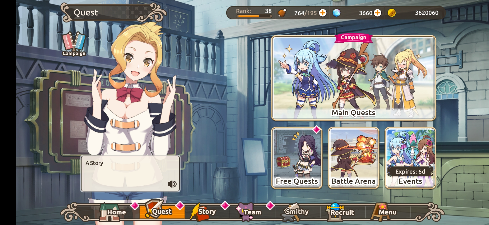
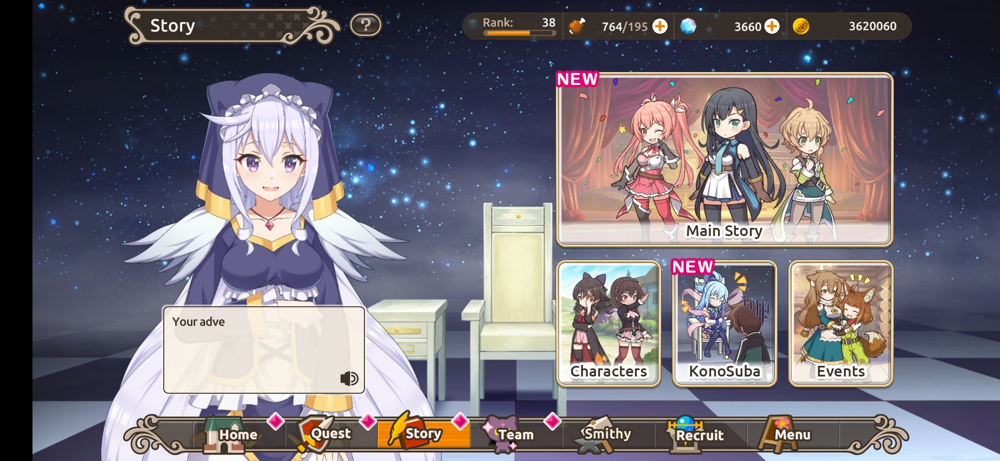
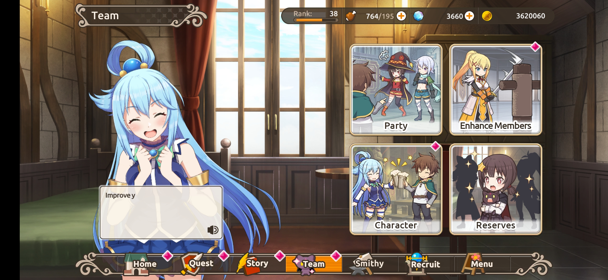
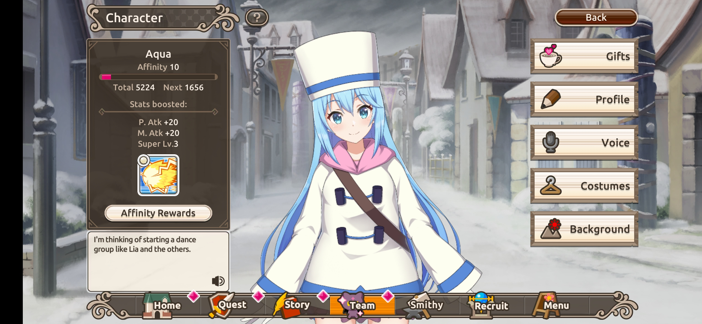

Review Game Konosuba: Fantastic Days
Game ini di luncurkan oleh Nexon secara global pada tanggal 19 Agustus 2021. Game ini dapat dimainkan di Android dan IOS. Game ini cukup menarik untuk dimainkan karena game ini tidak mengadaptasi cerita anime nya saja, tetapi ada cerita original. Jalan cerita orginal game ini terdapat pada Main Story. Untuk membuka Main Story tersebut player diharuskan menyelesaikan Main Chapter. Karakter dalam game ini diisi oleh pengisi suara yang terkenal, sehingga game tersebut tidak monoton membaca teks, tetapi juga dapat mendengar suara dari karakter. Untuk menikmati suara karakternya dapat memainkan mode story, chapter dan dapat masuk ke menu karakter. Game Konosuba: Fantastic Days hadir dengan grafis 2D berbasis konsep turn-based RPG. Yang saya sukai adalah terdapat fitur auto, sehingga player tidak perlu repot repot mengklik skill karakter. Selain fitur auto, animasi dalam ultimate skill karakternya sangat keren. Untuk menyelesaikan tiap chapternya player diharuskan membuat party agar bisa melawan musuh yang meiliki power tinggi. Kelemahan game ini adalah upgrade karakter yang cukup sulit, karena harus mengumpulkan item tertentu yang tergolong langka. Untuk mendapatkan karakter di game ini melalui sistem "gacha" untuk mendapatkan karakter dari bintang 4 sampai bintang 1. Untuk mendapatkan karakter dalam event, player harus "gacha" sebanyak 250x untuk mendaptkannya.
   